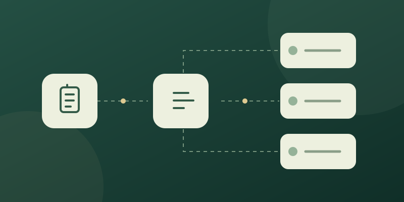
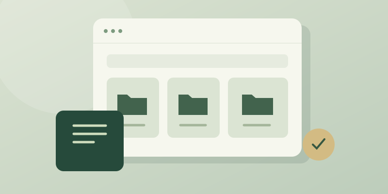
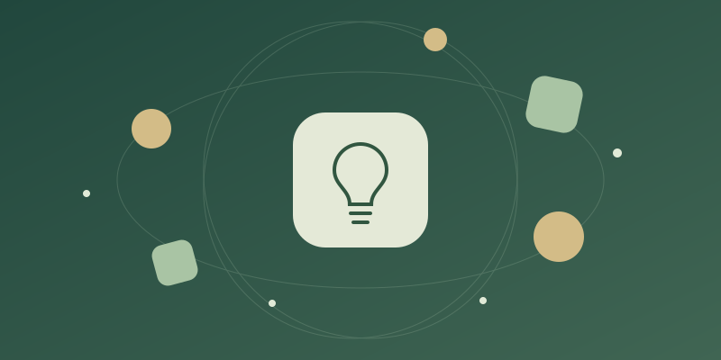
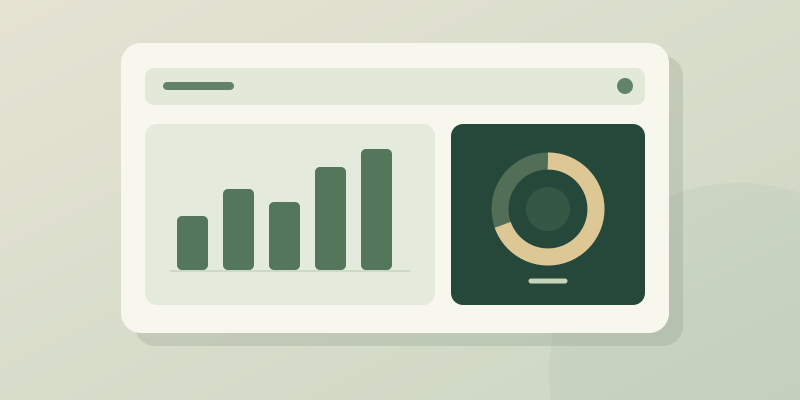

قرار جديد
اعتماد خطة التحول الرقمي
الإدارة التنفيذية · منذ ٤٥ دقيقة
مدير مساحة العمل · الإدارة العامة
داخل الدوامالإدارة التنفيذية · منذ ٤٥ دقيقة
الخميس · ١٠:٠٠ مساءً
التطوير المؤسسي · هذا الأسبوع
قاعة الاجتماعات · الأحد، ١٠ صباحًا
إدارة التخطيط · متبقّي يومان
الموارد البشرية · اليوم
كل محادثة لها خطوة تالية
من الطلب إلى الإنجاز
تقنية المعلومات بانتظار المراجعة
ابدأ ما تحتاجه من هنا
حكايات تجمعنا، أفكار تلهمنا، ومعرفة تستحق وقتك.
كيف تمنحنا اللقاءات المفتوحة فرصة لتبادل المعرفة وبناء تجربة عمل أفضل؟
تصوّر لتجربة رقمية توحّد نقطة البداية وتبسّط الوصول إلى الخدمات.
مساحة مفتوحة للأفكار الصغيرة والتجارب التي تستحق أن تصل للجميع.
أضف فيديو محليًا لمعاينة تغطية الفعالية؛ لا يُرفع إلى أي خادم.
خطوات صغيرة تمنح العمل المهم مساحة أكبر.
الاجتماع الجيد يبدأ بسؤال وينتهي بخطوة واضحة.

كيف نختار المهام المتكررة التي تستحق الأتمتة؟

بداية بسيطة لبناء مكتبة رقمية يسهل الوصول إليها.

مختبر رقمي يجمع الفريق حول نماذج أولية قابلة للتطوير.

لوحة مؤشرات تجمع نتائج العمل في نظرة واحدة.
قصص وأفكار من مساحة العمل، في عدد تقلب صفحاته على مهل.
سبتمبر ٢٠٢٦ · العدد التجريبي الأولمرجع مختصر للمعايير التي تساعدنا على اتخاذ القرار الصحيح.
نكتب ما يحتاجه المستخدم بلغة مباشرة ومسار واحد واضح.
استعرض التوجيهاتتحمي الأنظمة بيانات العمل وتوضح الصلاحيات من البداية.
اعرف المزيدكل قرار مهم يجد مكانه في مكتبة يسهل الرجوع إليها.
افتح المكتبةكل أدواتك في مكان واحد. اختر ما تحتاجه، واجعله أقرب في مساحة العمل.
الأدلة والسياسات والمستندات المعتمدة، في مرجع واحد.
في مساحة العملمتابعة المراسلات الواردة والإجراءات المطلوبة منك.
في مساحة العملتنظيم اللقاءات ومحاضر الاجتماعات ومتابعة مخرجاتها.
في مساحة العملترتيب الأولويات ومتابعة مهامك اليومية مع الفريق.
في مساحة العململفات الموظفين والخدمات الإدارية في مكان واحد.
في مساحة العملمتابعة أوقات الدوام وسجل الحضور اليومي.
في مساحة العملاستعراض الأرصدة وتقديم طلبات الإجازة ومتابعتها.
في مساحة العملالدورات والبرامج التدريبية ومسارات تطوير المهارات.
في مساحة العملمتابعة الطلبات منذ تقديمها وحتى اكتمال الإجراء.
في مساحة العملوصول موحّد إلى الخدمات والمساعدة التي تحتاجها.
في مساحة العملتنظيم المبادرات ومراحل التنفيذ ومسؤوليات الفريق.
في مساحة العملمتابعة الأجهزة والأصول والعُهد المسندة للموظفين.
في مساحة العملتنظيم احتياجات الشراء ومتابعة الموافقات والتوريد.
في مساحة العملاستعراض المعاملات المالية ومتابعة المصروفات.
في مساحة العملمرجع للعقود ومواعيدها ومستنداتها الأساسية.
في مساحة العملمتابعة الأصناف وحركة المخزون وطلبات الصرف.
في مساحة العملتقارير العمل ومؤشرات الأداء لدعم المتابعة.
في مساحة العملحفظ السجلات وتنظيمها وتسهيل الرجوع إليها.
في مساحة العملمشاركة المقترحات ومتابعة فرص تحسين العمل.
في مساحة العملتسجيل البلاغات التقنية ومتابعة الحلول والمساعدة.
في مساحة العملجرّب كلمة مختلفة أو أعد عرض جميع الأنظمة.
تفضيلات التثبيت تُحفظ على هذا المتصفح. أسماء الأنظمة وخدماتها نماذج توضيحية.